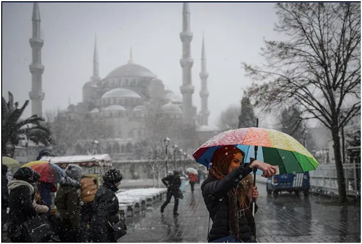
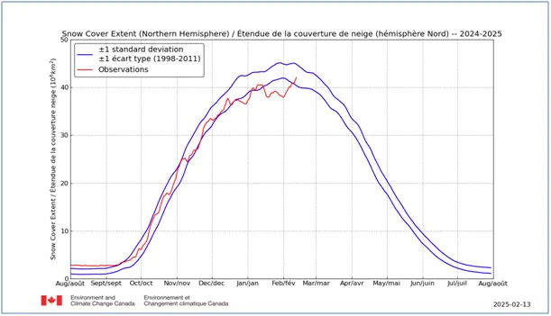
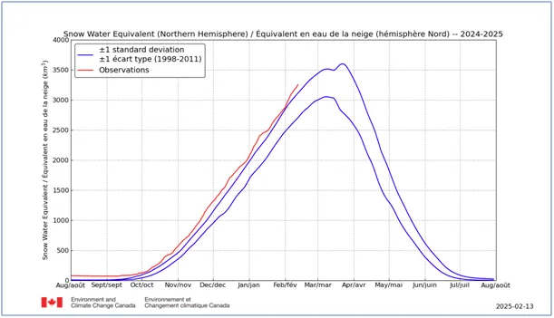
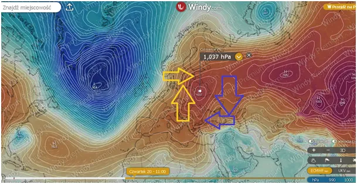
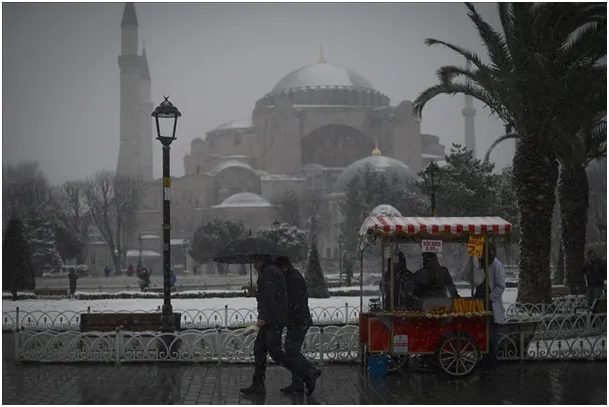
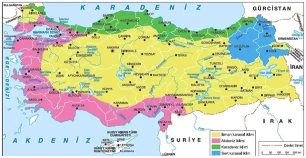

Rośliny, nie ludzie, wyznaczają strefy klimatyczne
Obfite opady śniegu w Azji i Ameryce Północnej powodują, że na połowę lutego, w szczycie pomiaru zjawiska, zasięg białej pokrywy powrócił do stanów średnich. Jednocześnie ilość wody uwięzionej w śniegu na półkuli północnej coraz wyraźniej jest ponad normą.


Ostateczny wynik poznamy pod koniec marca, kiedy to drugi wykres osiąga zwykle swe maksimum. Jednak nie należy się spodziewać, aby nad całą Arktyką nagle zniknęły chmury niesione przez cieple niże z południa. Kształt krzywej na drugim wykresie może gwałtownie się załamać pod koniec sezonu, w końcu marca, gdzie obszar między niebieskimi liniami normy się poszerza, co oznacza dużą zmienność w tym okresie. Najbliższe tygodnie to stabilny wzrost masy śniegu w Arktyce.
Tymczasem na naszych szerokościach geograficznych każdego dnia będziemy częściej otrzymywać cieplejsze podmuchy. Potwierdza się prognoza mówiąca, że już od środy mroźne wyże zostaną radykalnie wypchnięte na wschód. Tradycyjnie mieszkańcy zachodniej Polski to poczują wyraźniej, ale powiewy wiosny mają przekroczyć linie Wisły.

Sytuacja ta powoduje, że z prawej strony wyżu mroźne powietrze spychane jest nisko na południe, nad zimnym już Morzem Czarnym dociera do Turcji i paraliżuje życie w 20 milionowym Istambule. Turcy znają taką pogodą, ale zwykle pada tam śnieg w okolicy Nowego Roku, a w lutym wszyscy już wypatrują tam słonecznych dni i wiosennych kwiatów.

Tymczasem miasto tonie w korkach a prognozy zapowiadają ciągle nowe opady. "W tekście Jak badać klimat nie mając żadnych termometrów?" https://pawelklimczewski.pl/2023/03/21/jak-badac-klimat-nie-majac-zadnych-termometrow/ opisuję sprawę zdefiniowaną jeszcze w starożytności: to rośliny wyznaczają strefy klimatyczne a nie ludzie.

Cytryny rosną na południe od Istambułu a na północ od miasta już nie. Nie ma mowy o zmianie klimatu, jeśli poszczególne gatunki roślin i zasiedlają nowych terenów. Z ostatnich lat zbieram od miejscowych informacje, że to cytryny w tamtym rejonie są zagrożone, bo fale mrozów co dekadę schodzą coraz bardziej na południe. Oby to były tylko anomalie, a nie stały trend.
Paweł Klimczewski